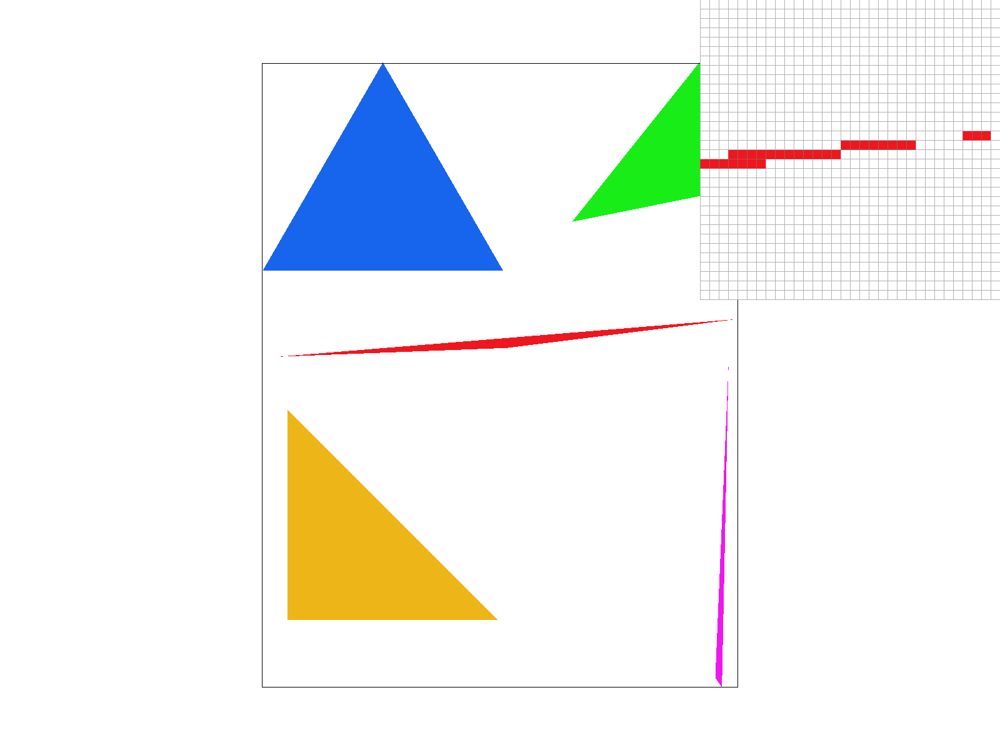
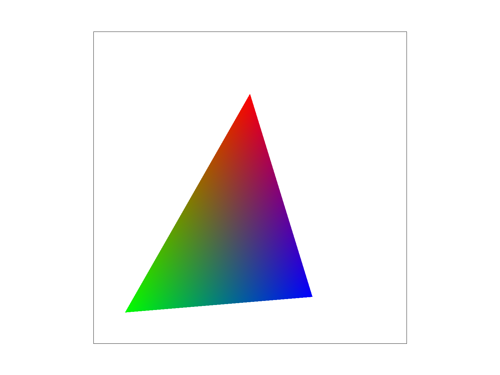
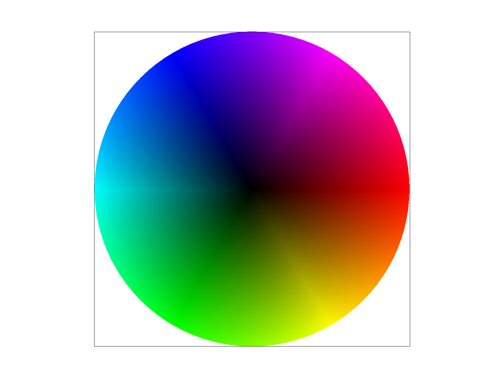

In this homework I worked on implementing many key components of a rasterizer.
First, I implemented rasterizing triangle polygons onto the screen space. The main challenge here was determining whether or not a screen pixel exists inside of the triangle of interest. If it does, then the sample buffer, which contains the pixels (or the set of fragments that will then make up some pixels in the case of supersampling) will be set to the same color as the triangle that is being rasterized. In determining the inside-triangle test, I had to figure out the exact vector-algebra machinery that would output whether a point was inside a triangle given by a set of three vertices. This was probably the most challenging part of the first task as it tested my knowledge of tangent lines, planes, and cross products. The other part I had to figure out was converting the set of given points into a consistent winding order. I decided this would be counterclockwise. In order to do this I had to rely on vector-algebra again, specifically cross-products (which would be positive if the points were in counterclockwise winding order).
Second, I extended the functionality of the simple triangle rasterizer by implementing super-sampling as a means to introduce anti-aliasing since super-sampling effectively increases sampling frequency. The changes made to the existing rasterize_triangle method were pretty simple; I just had to carefully calculate the position of the super-samples within a pixel using the sampling-rate of our RasterizeImp (done through some drawing and deriving the correct equations). The most challenging part was to edit the rest of the codebase to support sampling. Namely, dynamically changing the size of the sample_buffer depending on the sampling rate as well as resolving the final color to the frame buffer by assigning the color rasterized as a mixture of the samples within a pixel. These components touched a lot of different methods within the codebase that had to be tracked down.
The next task was to implement transforms. This was quite straightforward, the transformation matrices for rotations, translations, and scaling were already derived before and had to just be written out in code in their corresponding functions.
The fourth task was an extension on the rasterization of triangles. This time each vertex had a different color assigned to it, so we were no longer dealing with a single colored polygon. That meant that the sampled points within the triangle that were going to finally go into the frame buffer would need an interpolated mixture of the various colors the triangle was made up of. To implement this, barycentric coordinates were heavily utilized. Namely, barycentric coordinates, made up of the variables alpha, beta, and gamma can be thought of as assigning weights to each vertex of the triangle, having the property that each position relative to the triangle can be represented in barycentric coordinate space instead of x,y,z space. This view gives the nice property of thinking about the barycentric coordinates of points inside the triangle as encoding the weighted sum of each of its vertices. This implied that finding the barycentric coordinate of the point within the triangle being sampled would also allow us to find the weights with which we mix the colors at each of the vertices to assign the final color of the point. It also translates easily to supersampling with no changes necessary. The hardest part was simply determining the barycentric coordinates, which was done by calculating the equation for each of the lines of the triangle and then comparing the ratio of the value evaluated at the point being sampled to the point across from the line (which would be 1). It turns out that instead of finding the equation equating the dot product of the normal of the line with the line anchored at the beginning point of the line in the triangle to the point being sampled would amount to the values mentioned earlier.
The fifth task had me implement pixel texture sampling. Basically now the coordinates of each of the vertices in the triangles were associated with a texture-sample coordinate, which we would use to determine the color of the various samples of the triangle instead of relying on a color value like we did before. This goes along with the idea of “sampling twice” as mentioned in lecture since we sample points inside the triangle to eventually rasterize and we also sample those corresponding points on the texture space to assign each of the samples a color which is also a sample but from the texture maps. So essentially we needed to find the corresponding texture space coordinate for each sample. This was done through barycentric coordinates since those encode relative positions, so finding the barycentric coordinates and then multiplying those by the coordinates in texture space of the triangle would give the underlying texture coordinate of each point being sampled. Now the texture map is a discrete valued data structure that returns color for each coordinate, however our coordinates are continuous, so essentially to determine a color we need to sample again. Two sampling schemes were implemented, one that just returned the color of the nearest discrete coordinate to the query. And another one that implemented bilinear interpolation, which essentially gave the weighted color average of the closest 4 texture points to the query, weighted by relative distances to those points from the query point. In this way we were able to finally assign a color to the screen sampled coordinate utilizing our texture map.
The last task extended the capabilities of our texture mapping system by introducing level sampling. Essentially the issue with solely using pixel sampling is aliasing because movement in screen space could have very different footprints on the texture space; for instance moving by one unit in either the x or the y direction could correspond to multiple units of movement in the texture space, leading to aliasing since our samples of the texture space are changing with extremely high frequency and our overall sampling frequency is too low. This motivates the idea that when the screen space movement footprint is too high for sample space, we want to sample the color that we are assigning from a lower frequency texture map to help anti-alias. This is where level-sampling and mipmaps come into play. Basically mipmaps are the data structure that powers level sampling. Each increasing level of the mipmap contains increasingly filtered versions of the original texture map (we are filtering more and more frequencies of the texture map at higher mipmap levels). Now for each screen space point we sample, we calculate the footprint on the texture map (which is the larger of distance in either the U/V direction we move when we move in X/Y). And the level which we sample at is proportional logarithmically to this distance (which makes sense since each subsequent level halves the number of pixels in each direction, implying the same proportionality). There is a possibility that the logarithm returns a number less than 0 or more than the levels in our mipmap. In that case we sanitize the output and simply query the mipmap at level 0 or the highest value respectively. With the level chosen for each pixel, the mechanism for sampling the map at each level from the previous part still applies, giving us a powerful two-phase texture sampling, leading to extremely nice rendering. Furthermore since the level returned is a continuous value, the level itself can be determined through a bilinear interpolation of the mixture of the color returned from the two closest levels to not have drastic color changes, or we can just use nearest neighbors. Clearly, implementing level sampling along with pixel sampling greatly increased the number of options available to render an image.
At a high level rasterization is the process of converting geometrically defined models (such as a triangle mesh) or images into inputs for our sample buffer, which is an array of fragments. These frames are then manipulated to actually serve as the inputs into a framebuffer, which is then used by the screen to display the geometry onto the pixel display of the screen. In this task, I worked on rasterizing single colored triangles. This meant that I had to convert the continuous domained defined geometry of the triangle (by the three vertices) into a set of inputs for the sample buffer that colored the corresponding sample if it was inside the triangle. Since this part did not have supersampling, each sample corresponded with the actual frame buffer pixel that would get rasterized. Essentially the decision of whether or not to rasterize a particular point was based on determining whether or not the point was inside the triangle of interest. The way a particular point was determined to be inside the triangle was as follows.
The implementation efficiency of this point-in-triangle test was no worsethan one that checks each sample within the bounding box of the triangle. This is because the array of sample points that were traversed were: from: min(x2, x0, x1) to max(x2, x0, x1) and from min(y0, y1, y2) to max(y2, y0, y1). Clearly this would make the number of samples checked equal to the number in the bounding box of the triangle as we iterate through all the points in the rectangle formed with the lower left coordinate being the lowest x and y coordinate in the vertices of the triangle and the upper right coordinate being the highest x and y coordinate in the vertices of the triangle, which is exactly the bounding box of the triangle, covering the same number of samples my implementation does.
Notice that in this naive non-super sampling method we see aliasing at really thin areas of the triangle, which are high frequency areas.
To be implemented, barycentric coords + table of differences in runtimes
Much of the machinery to implement supersampling was done in the previous task. Now depending on the sample rate this task would take sample_rate number of samples inside the 1 x 1 pixel box. Since the supersampling method we were tasked with implementing would take the super samples at deterministic positions within 1 unit pixel box and we already had the machinery developed to iterate through all the pixels inside of the triangle’s bounding box, once we arrived at a specific pixel (so two next for loops deep). Two other for loops were created to implement the super samples. These would iterate through the combinations of (x + 1/(2n) + (i - 1)/n, y + 1/(2n) + (j - 1)/n). Where n would be the square root of the sampling_rate and variables i and j represent the ith and jth point (1-indexed) in the x and y direction respectively (for a total of square root sampling_rate in each direction).
Now because we are collecting more data per pixel, we also needed to change the data structure that stores the color value at each sample. This is where the sample_buffer was utilized. The size of the sample_buffer, which is just a vector, was dynamically changed to reflect the sampling_rate. Specifically its size was width * height * sample_rate and the super sample corresponding to a particular pixel was stored at sample_rate * (y * width + x) + k, where k is the row wise sample number within the (x,y) pixel.
Another issue was with rasterizing pixels and lines. We did not want those to be supersampled. Which means that if in the non-supersampled case a particular point in the framebuffer rasterized the line or pixel, it must remain the same with the same color in the supersample case. To account for this detail, the fill_pixel function, with both rasterizing pixels and lines utilized was modified. Specifically every super sample corresponding to the pixel that is being filled would have the same color that the pixel was being filled with. The rationale for that will make sense after the next paragraph.
The final piece to change was the color that would be resolved to the frame_buffer since supersampling does not change the underlying dimensionality of the frame buffer. The color corresponding to each pixel in the frame buffer was the average color of all the samples corresponding to the pixel. This way of calculating the final rasterized color has anti-aliasing advantages over the non-super sampled case. This is because the ability to take multiple samples within each pixel better captures the change in frequency/color of the underlying image as we are now essentially sampling at a higher frequency, which in term increases our nyquist frequency and hence helps introduce some anti-aliasing. Since we are able to better capture fast changing signals (when the color drastically changes at an edge for instance) the appearance of jaggedness will be reduced as these edges will more softly be resolved as the colors blend and blur at them. The pictures below show the antialiasing.
We see the effect of higher magnitudes of supersampling. Namely zones where the frequency of the image rapidly changes have a much smoother transition with higher super-sampling rates due to the anti-aliasing effect it has since it corresponds to a higher sampling frequency. With higher super-sampling rates the fast changes in the frequency are smoothed-out and the change is visually blurred rather than being abrupt.
Thinking to do jittered sampling seems not too bad.
| Column 1 | Column 2 |
|---|---|
| Data 1 | Data 2 |
| Data 3 | Data 4 |
The attempt was to make the cube man look as if it was flying at an angle up in the sky flat. This is why it was rotated with its hands up in the air and its legs slightly bent.
Potential GUI
Essentially barycentric coordinates are another coordinate space for triangles (and multidimensional triangle shapes). It allows us to represent points on a coordinate plane with respect to the vertices of the triangle. These vertices are located at the barycentric coordinates of (1, 0, 0), (0, 1, 0), and (0, 0, 1) respectively. Where the specific indices represent alpha, beta, and gamma. Among all the special properties of these coordinates, one of particular interest is the fact that if alpha + beta + gamma = 1 and are all less than 1, the coordinates represent a point inside of the triangle. In this constrained view, we can think of the barycentric coordinates for a particular point as a weighted sum of all the vertices of the triangle. Indeed, the point (⅓, ⅓, ⅓) actually represents the centroid of the triangle and in the weighted sum view we just took the average of all the points. I described the process of finding the barycentric coordinate of a particular point in the overview section of this writeup. However, along with the fact that points can be viewed as a weighted sum of the vertex, if the vertices are associated with certain properties we can interpolate the property value at a sample point inside the triangle by weighting the sum with the barycentric coordinates. This is done for color interpolation and sampling when each vertex of the triangle is associated with a color and we need to assign a color to the rasterized points inside of the triangle. The picture below better showcases this phenomenon. The top vertex is associated with red, right with blue, and left with green. Notice how points close to any of these vertices contain a color close to that of the vertex but as we move toward the center or along each line there is a mixture. The weights of the mixture are the ones represented by the barycentric coordinates.
Triangle with colors inside interpolated using barycentric weights can also be intrepreted as the color represents the barycentric coordinate at a point.
Color wheel with the colors rasterized with the help of barycenter coordinates
Previously colors were being assigned to the points we were trying to rasterize using barycentric interpolation and attaching color values to the specific points in our geometry. However with texture mapping each vertex in our triangle is associated with a corresponding texture coordinate. This texture coordinate represents another space that we sample from to determine the color of the particular vertex. This means that when we are tasked with rasterizing our triangle the samples we take inside the triangle will be assigned to a corresponding texture coordinate for the sample. This sampling will necessarily be in the continuous domain, however we only have texture coordinate to color mapping for lattice points in the texture coordinate space. Therefore to determine the color of the sample, we need to also sample in the texture space. The two methods of sampling that were implemented were nearest neighbor sampling, which would just return the texture color of the closest lattice texture point to the sample texture coordinate; and bilinear sampling, which would find the 4 closest lattice points and then depending on the distance from each of these point, the final color would be the weighted average of all the colors at the 4 points. In this manner we can view bilinear sampling as taking more samples of the texture space than does the simple nearest neighbor. The process of finding the corresponding texture coordinate for each sample coordinate is described further in the overview section.